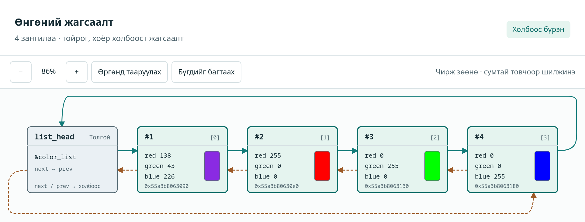
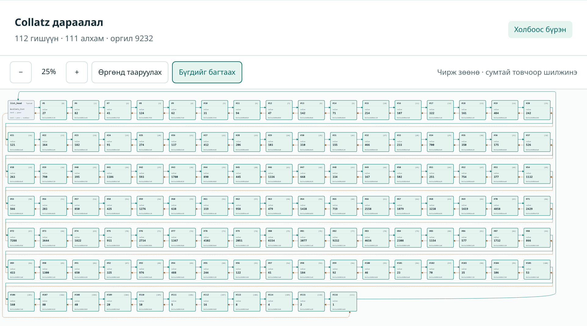
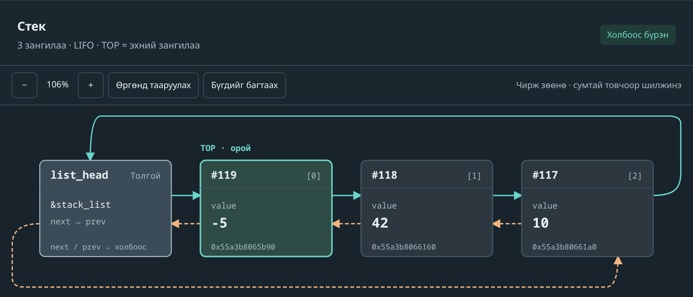

АСУУДАЛ
Кернелийн dmesg командаар жагсаалтын утгуудыг дарааллаар нь харах боломжтой. Гэхдээ зөвхөн текстэн мэдээллээс next, prev холбоосууд хаашаа зааж байгаа болон жагсаалтаас элемент хасах үед холбоосууд хэрхэн өөрчлөгдөж байгааг ойлгоход хүндрэлтэй байдаг. Мөн Collatz дараалал хэдэн элементтэй байхыг урьдчилан мэдэх боломжгүй.
ШИЙДЭЛ
Хоёр модуль нь дугуй, хоёр чиглэлт холбоост жагсаалт үүсгэдэг. Collatz дараалал анхдагч тохиргоогоор 25-аас эхэлнэ. Модулийг кернелээс салгах үед жагсаалтын бүх зангилааг устгаж, ашигласан санах ойг чөлөөлдөг. Мөн модулийн эх кодыг өөрчлөхгүйгээр shim ашиглан хөрвүүлж, хэрэглэгчийн орчинд ажиллуулан шалгасан.
Системийн ажиллагааны урсгал
ТУРШИЛТ БА ДҮРСЛЭЛ

next, тасархай сум prev холбоосыг заана.

ҮР ДҮН
- C хөдөлгүүрийн
шалгасан хариу · PASS - 229/229
- HTTP автомат тест
PASS - 15/15
- ENOMEM байрлал
shim-д алдагдал 0 - 1 254
- Collatz 27 · кернел
зангилаа / оргил - 112 / 9232
Тайлбар. ASan болон UBSan ашиглан C хэл дээрх 4 багц тестийг нийт 9 нөхцөлөөр шалгасан. Collatz дарааллын 1 250 болон өнгөний жагсаалтын 4 байрлалд санах ой хуваарилах алдааг зориудаар үүсгэж туршихад kmalloc болон kfree функцийн дуудалтын тоо тэнцүү байсан.
2026 оны 11-р сарын 25-нд Arch Linux 7.3.4-arch1-2 дээр хоёр модулийг ачаалж, буулган туршсан. Collatz дарааллыг 27-оос эхлүүлэхэд 111 алхам хийж, 77-р индекс дээр хамгийн их утгад хүрсэн. Модулиудыг rmmod командаар буулгасны дараа өнгөний жагсаалтын 4, Collatz дарааллын 112 зангилааг бүрэн чөлөөлсөн нь логоор батлагдсан.
ДҮГНЭЛТ
- Кернелийн
dmesgгаралт нь лавлагаа үр дүнтэй тохирсон. Мөн өмнөх хувилбарыг Ubuntu 24.04 болон Xubuntu 25.10 үйлдлийн систем дээр бусад баг дахин туршиж шалгасан. - Ирсэн дөрвөн санал, шүүмжийн дагуу HTTP тест, Host шалгалт болон Chrome хөтчөөс хандахтай холбоотой асуудлуудыг зассан. Үүнээс гадна чөлөөлсөн зангилааны мэдээллийг логт хэвлэх, графыг дэлгэцэд багтааж харах боломж болон GPL-2.0 лицензийг нэмсэн.
- Веб граф нь хэрэглэгчийн орчинд ажиллаж буй жагсаалтын бүтцийг дүрслэн харуулдаг. Харин бодит кернелийн санах ойн ашиглалтыг
kmemleakболонslabinfoашиглан хэмжиж шалгаагүй.